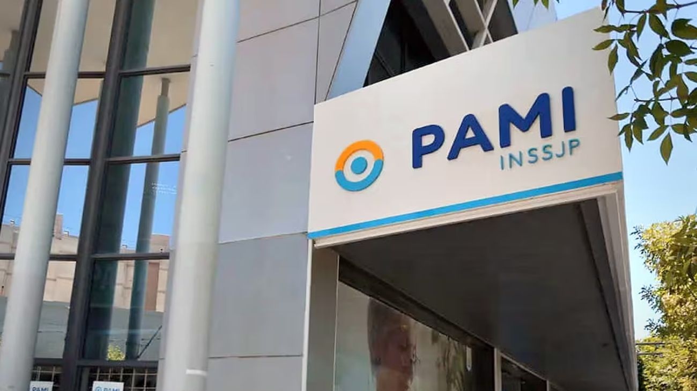

Crisis en PAMI: Protestas y movilización
El instituto que cubre a seis millones de adultos mayores atraviesa su peor crisis en años: paro médico nacional, deuda millonaria con farmacias y recorte del vademécum gratuito generaron una ola de protestas en todo el país.

El PAMI enfrenta en abril de 2026 una tormenta institucional sin precedentes. La publicación de la Resolución 1107/2026, que eliminó todos los adicionales variables del sistema de pago a médicos de cabecera para pasar a una "cápita unificada" de $2.100 por afiliado, fue la gota que rebalsó el vaso. La Asociación de Profesionales del PAMI (APPAMIA) declaró un paro nacional de 72 horas que comenzó el lunes 13 de abril, con atención limitada estrictamente a urgencias y emergencias oncológicas en los principales centros urbanos del país.
Los gremios médicos denuncian que el nuevo esquema representa una reducción de ingresos netos de entre el 40% y el 50%. Un profesional con una cartera estándar de 400 afiliados, que bajo el sistema anterior percibía hasta $1.650.000 mensuales sumando cápita y adicionales, ahora cobra $840.000, un monto que no alcanza para cubrir los costos básicos de un consultorio. La medida además elimina cualquier incentivo económico para la atención presencial, lo que según los profesionales derivará en una atención superficial y en derivaciones masivas a especialistas que ya tienen listas de espera de hasta cuatro meses.
En paralelo, el sector farmacéutico denuncia una deuda acumulada que forma parte de los $500.000 millones que el PAMI adeuda a sus prestadores. En localidades como Pehuajó y Mar del Plata, los farmacéuticos advirtieron que la atención es "a cuentagotas" y que, sin una inyección urgente de fondos, se verán obligados a suspender el servicio de forma total. Además, desde abril el organismo oficializó la quita de cobertura al 100% para 44 medicamentos —que incluyen 54 principios activos— entre los que figuran antibióticos de uso frecuente, analgésicos para el dolor crónico, antivirales y corticoides. Para acceder a la gratuidad, los afiliados deben ahora tramitar un "Subsidio Social" con requisitos patrimoniales estrictos, una barrera burocrática que excluye a cientos de miles de beneficiarios.
Las protestas del miércoles 15 de abril unificaron el reclamo gremial con la movilización de jubilados frente a sedes del organismo en todo el país. En Buenos Aires, trabajadores nucleados en ATE realizaron una olla popular frente a la sede central de Avenida Corrientes 655, mientras que en Córdoba el gobernador Martín Llaryora respaldó las movilizaciones y denunció la falta de envío de fondos nacionales. En Pehuajó, la situación es especialmente crítica: la agencia local lleva semanas sin un jefe designado, lo que obliga a que todos los trámites viajen a Mar del Plata o Buenos Aires, añadiendo semanas de demora a gestiones de vida o muerte. El Plenario de Trabajadores Jubilados convocó a una gran marcha nacional hacia el Congreso para finales de abril, exigiendo la restitución del vademécum gratuito y un aumento de emergencia de los haberes mínimos.